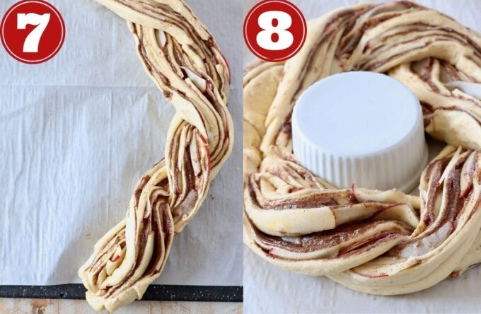

Ingredients you’ll need
- Crescent roll dough: You can use canned crescent roll dough or sheets of canned crescent dough.
- Granulated sugar
- Brown sugar
- Ground cinnamon
- Unsalted butter: Softened prior to making the recipe (room temperature).
- Pazazz apples: Sweet, tart, and extra crispy apples.
- cheese
- Milk
- Vanilla extract
- Powdered sugar
Step by step instructions
-
Roll out the crescent roll dough: Place a large piece of parchment paper on a flat work surface. Place both sheets slightly overlapping and press seams together.
.jpeg)
-
Top with the cinnamon sugar butter: Combine softened butter with granulated sugar, brown sugar, and ground cinnamon. Spread evenly across the dough.
.jpeg)
-
Add the apples: Core and thinly slice one Pazazz apple, then place slices on top in an even layer (not overlapping).

-
Roll it up: Roll the crescent roll dough up tightly over the apples and cinnamon sugar butter into a tube.

-
Slice it in half: Use a sharp knife to slice lengthwise through the middle of the tube.

-
Separate the two halves: Once you’ve sliced the tube, separate the two halves and ensure the cinnamon butter and apples are facing up.
-
Braid them together: Carefully braid the two halves together, lifting one half over the other.

-
Form the wreath: Bring the two ends together to form a wreath. Bake at 350°F for 20-25 minutes or until golden brown.

If you want to know more, please click:
Reference Recipe